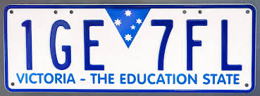

This dashboard provides information about the Top 25 Victorian High Schools as of 2025, according to the online education community, Better Education.
The dashboard provides general information about the schools, along with where they are located, VCE performance statistics and information about rising schools that may potentially reach the top 25 in coming years.

The bubble chart shows the cohort size of each school, where bubble size corresponds to cohort size. The cohort size refers to the total number of students completing at least one Unit 3/4 VCE Subject in 2025. Bacchus Marsh Grammar had only 55 students in 2025, whereas Melbourne High School had a grand total of 722 students.
Of these 25 Schools, majority were non-selective schools. Interestingly, only 6 of the top high schools of 2025 had a selective entry process.
St Kevin's College and Loreto Mandevile Hall were the only Catholic schools in the top 25 schools. Majority of the Top 25 High Performing schools were independent schools.
The dot distribution map displays the locations of the 25 schools. The schools are separated by region, with all schools being located within 3 different regions. These are South-Western Victoria, North-Eastern Victoria and South-Eastern Victoria.
Of the 25 schools, majority are Co-Ed and Female-only schools. Male-only schools only took up around 12% of the total gender distribution of the top 25 schools.
The dumbell plot shows the difference in percentage of 40+ study scores from 2024 to 2025. Some schools had significant increase, with Bacchus Marsh Grammar having a 19.4% increase in just one year. Ballarat Clarendon College had the highest percentage values in both 2024 (34.7%) and 2025 (35%).
The scatter plot shows the Highest Acheived ATARs received by each school in 2025. These ATARs are clustered around the 99.8+ values, with only one ATAR from Ruyton Girl's School falling below 99, being 97.90.
The slope chart introduces the schools ranked 26-30 in 2025, and their rank change from 2024 to 2025. Some schools had a significant decrease in rank from 2024 to 2025, including St Catherine's School, which was previously rank 5 in 2024. Other schools, such as The King David School, had a significant increase in rank, jumping 21 ranks to reach rank 27 in 2025.
The chart demonstrates that the list of Top Ranked Victorian Schools is a very flexible list that changes year to year. The schools explored in this dashboard are the top ranked schools as of 2025 only.
Visualisation by: Emaan Aftab Samdani (36196940)
Last Modified Date: 03/06/2026
Generative AI (Microsoft Copilot) was used in the debugging process of building the VegaLite JSON files for the idioms. It was used when error messages appeared when using the VegaLite preview option within VSCode that I was not able to fix successfully. Generative AI was also used during debugging of formatting the HTML file.
Data Sourced From: Better Education Rankings, School Websites, VCAA Data Repository, vic.gov.au
Image sourced from: https://en.wikipedia.org/wiki/File:2015_Victoria_registration_plate_1GE_7FL_The_Education_State.jpg